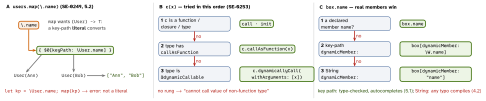

swift · folio
In one line: Almost every “clever” call in Swift is sugar the type checker rewrites into
an ordinary call: a trailing closure is the last argument, \.name becomes a
closure, c(x) becomes c.callAsFunction(x), box.name becomes
box[dynamicMember:], :=?? receives its right side unevaluated, and
#line in a default argument is read at the caller. Say the rewrite and you
have explained it.
Download PDF Print view LaTeX source


Trailing closures & anonymous arguments
Button { save() } label: { Text("Save") } // 5.3: 1st unlabeled,
// rest labeled = Button(action: {...}, label: {...})
xs.first { $0 > 3 } // trailing closure = the LAST argument
if xs.contains(where: { $0 > 3 }) { } // in if/guard/for: keep it in ( )
xs.sorted { $1 < $0 } // using $1 implies 2 params -> descending
dict.map { k, v in "\(k)=\(v)" } // (key, value) tuple destructured
zip(a, b).map { $0 * $1 } // same exception: 1 tuple param, 2 names
xs.reduce(0) { _, x in x } // { $0 } alone: "expects 2 arguments"$n rules: only in a closure without a parameter list; each nested
closure has its own $0 (the outer one is unreachable — name it); the highest
$n used fixes the minimum arity.
Key paths, initializers, methods and operators as functions
users.filter(\.isActive) // Bool key path as a predicate
ForEach(0..<5, id: \.self) // \.self = the identity key path
["1", "x"].compactMap(Int.init) // [1] - init?(_:) used as (String) -> Int?
[1, 2].map(String.init) // ["1", "2"]
names.map(String.uppercased) // [() -> String] (!): (String) -> () -> String
User.greet(alice)() // Type.method is curried: instance first
let greet = alice.greet // bound method: a closure that RETAINS alice
names.map(User.init(name:)) // compound name picks one overload
xs.reduce(0, +); xs.sorted(by: >) // an operator is a function value
let add: (Int, Int) -> Int = (+) // parenthesise to name itcallAsFunction · dynamic members · dynamic calls
struct IsValid { func callAsFunction(_ s: String) -> Bool { !s.isEmpty } }
let isValid = IsValid(); isValid("x") // isValid.callAsFunction("x")
xs.filter(isValid) // error: not implicitly a function
xs.filter(isValid.callAsFunction) // OK: explicit method reference
@dynamicMemberLookup struct JSON {
subscript(dynamicMember k: String) -> JSON? { /* ... */ nil } }
json.user?.name // json[dynamicMember: "user"]?[dynamicMember: "name"]
@dynamicCallable struct Sum {
func dynamicallyCall(withArguments a: [Int]) -> Int { a.reduce(0, +) } }
let sum = Sum(); sum(1, 2, 3) // 6; withKeywordArguments: KeyValuePairsImmediately-invoked closures
let label: UILabel = { // runs ONCE, right here; note the ()
let l = UILabel(); l.numberOfLines = 0; return l }()
lazy var df: DateFormatter = { // runs on first access; may use self
let f = DateFormatter(); f.dateStyle = .short; return f }()Default arguments are evaluated at the CALLER
func log(_ m: String, file: String = #fileID, line: Int = #line) { }
log("hi") // file/line of THIS call site, e.g. "App/Feed.swift", 42
func add(_ tags: [String] = []) { } // fresh [] on every call (not Python)
_ = try? save() // discard result + error; silences unused-result warningMagic literals (#fileID, #line, #function) as defaults
read the call site; since 6.0 so do macros used as defaults (SE-0422).
@autoclosure — how ?? and assert are written
func ?? <T>(v: T?, d: @autoclosure () throws -> T) rethrows -> T {
switch v { case .some(let x): return x; case .none: return try d() } }
name ?? loadDefault() // ??(name, { loadDefault() }) - runs only if nil
assert(isSorted(xs)) // closure never called in -O: zero release costImplicit members · subscripts
let c: Color = .red.opacity(0.5) // 5.4: chain from Color, must END in Color
let p: Point = .init(x: 1, y: 2) // .init = Point.init
counts[word, default: 0] += 1 // Dictionary subscript(_:default:), in place
extension Collection { // labeled subscript: x[safe: 9] -> nil
subscript(safe i: Index) -> Element? { indices.contains(i) ? self[i] : nil } }
enum Theme { static subscript(k: String) -> Color { .red } } // Theme["x"]inout, &, exclusivity
func bump(_ n: inout Int) { n += 1 }
bump(&score) // copy-in, copy-out: written back when bump returns
bump(&user.age) // observed/computed: get, call, set; didSet ALWAYS
swap(&a[0], &a[1]) // error: overlapping accesses to 'a' -> a.swapAt(0, 1)
withUnsafeMutablePointer(to: &x) { $0.pointee = 1 } // & also makes pointersTraps
names.map(String.uppercased)compiles — to an array of closures.- Only a key-path literal converts; method key paths
\.uppercased()(SE-0479) are not in the language — returned for revision. inouton an observed property firesdidSeteven if the value is unchanged.- String-keyed
@dynamicMemberLookupturns typos into runtimenil. - Drop the
()after= { … }and you store the closure (():=->UILabel), not a label. - A
callAsFunctionvalue is not a function type:filter(isValid)fails.
Remember
“Trailing = last arg · \.x = closure · c() = callAsFunction ·
.x = member lookup · :=?? = autoclosure · #line = caller.”